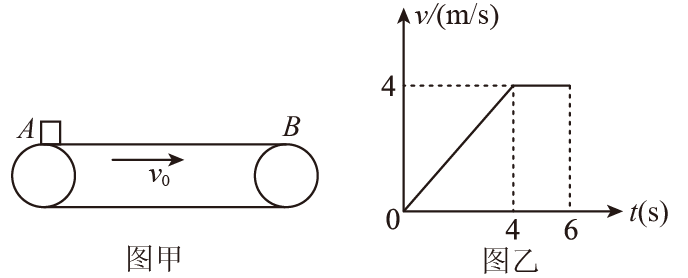
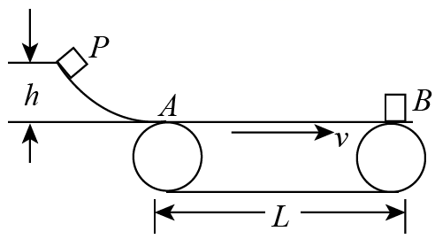
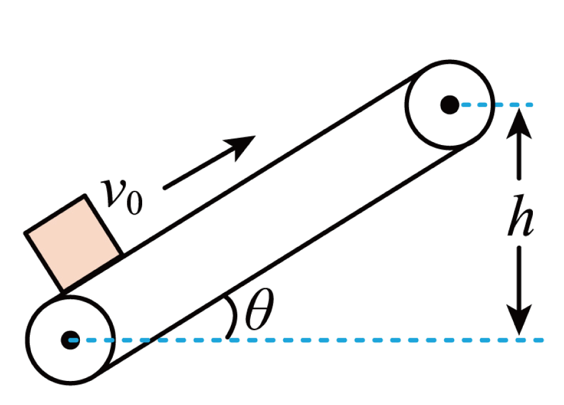
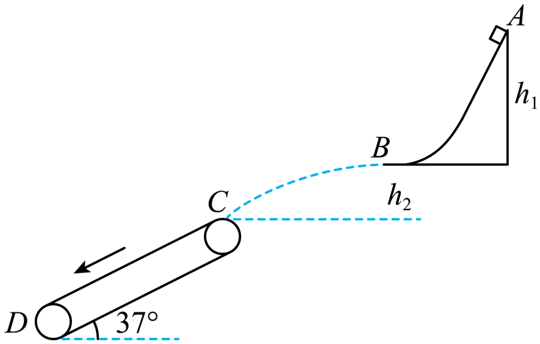
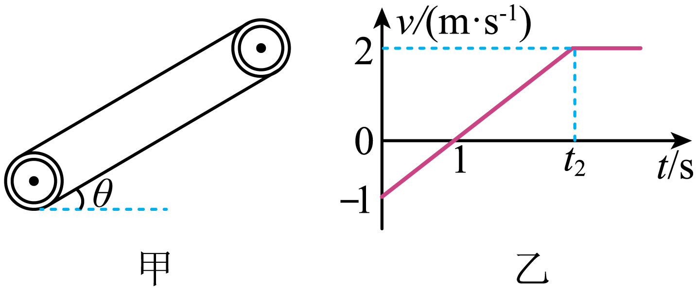
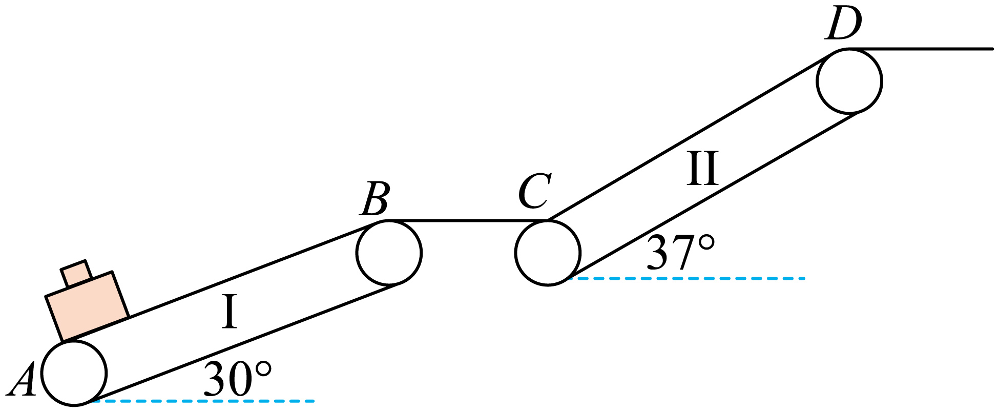

【例 2】（多选）建筑工地水平运输带以恒定速度 $v_0=1\ \text{m/s}$ 顺时针传动。工人将质量 $m=2\ \text{kg}$ 的材料静止放到最左端，同时工人以 $v_0=1\ \text{m/s}$ 向右匀速运动。$\mu=0.1$，运输带长 $L=2\ \text{m}$，$g=10\ \text{m/s}^2$。以下说法正确的是（ ）
【变式 2】沿顺时针运动的水平传送带 $AB$，零时刻将质量 $m=1\ \text{kg}$ 物块轻放 $A$ 处，6 s 末恰好到 $B$ 处，物块 6 s 内 $v-t$ 图像如图乙（$g=10\ \text{m/s}^2$）。则（ ）


A．$AB$ 长度为 24 mB．物块相对传送带滑动距离 12 m
C．传送带多耗电能 16 JD．动摩擦因数 0.5
【答案】C 【难度】0.4
【详解】由图 $AB$ 长度即物块位移 $x=L=\dfrac{(6+2)\times4}{2}\ \text{m}=16\ \text{m}$ → A 错。
6 s 内传送带路程 $s=v_0t=24\ \text{m}$，相对滑动距离 $\Delta x=s-x=8\ \text{m}$ → B 错。
多耗电能 $E=\mu mgv_0t'=16\ \text{J}$（4 s 内克服摩擦做功）→ C 对。
物块加速度 $a=\dfrac{\Delta v}{\Delta t}=1\ \text{m/s}^2$，$\mu mg=ma\Rightarrow\mu=0.1$ → D 错。故选 C。
【变式 2】（多选）质量 $m=1\ \text{kg}$ 的物体从高 $h=0.2\ \text{m}$ 的光滑轨道 $P$ 点静止下滑，滑到水平传送带 $A$ 点。$\mu=0.2$，传送带 $AB$ 间距 $L=5\ \text{m}$，传送带以 $v=4\ \text{m/s}$ 匀速运动，$g=10\ \text{m/s}^2$。则（ ）

A．从 $A$ 到 $B$ 时间 $1.5\ \text{s}$B．摩擦力对物体做功 $2\ \text{J}$
C．产生热量 $2\ \text{J}$D．电动机多做的功 $10\ \text{J}$
【答案】AC 【难度】0.65
【详解】下滑到 $A$ 速度 $v_0=\sqrt{2gh}=2\ \text{m/s}<4\ \text{m/s}$；$a=\mu g=2\ \text{m/s}^2$；$t_1=\dfrac{v-v_0}{a}=1\ \text{s}$，位移 $s_1=\dfrac{v_0+v}{2}t_1=3\ \text{m}
到 $B$ 速度 $v=4\ \text{m/s}$，动能定理 $W=\dfrac12mv^2-\dfrac12mv_0^2=6\ \text{J}$ → B 错。
$t_1$ 内皮带位移 $S_{\text{皮带}}=vt_1=4\ \text{m}$，热量 $Q=\mu mg(S_{\text{皮带}}-s_1)=2\ \text{J}$ → C 对。
电动机多做功 $W=(\dfrac12mv^2-\dfrac12mv_0^2)+Q=8\ \text{J}$ → D 错。故选 AC。
4四、倾斜传送带问题
倾斜传送带上，物体除摩擦力外还受重力沿带的分量 $mg\sin\theta$。能否共速、共速后匀速还是反向加速，取决于 $\mu$ 与 $\tan\theta$ 的大小关系。
图 4：倾斜传送带模型
【例 1】绷紧的传送带与水平面夹角 $\theta=30^\circ$，保持 $v_0=2\ \text{m/s}$ 运行。将质量 $m=10\ \text{kg}$ 工件轻放底端，经 $t=1.9\ \text{s}$ 被送到 $h=1.5\ \text{m}$ 高处，$g=10\ \text{m/s}^2$。求：(1) 动摩擦因数；(2) 电动机多耗电能。

【答案】(1) $\dfrac{\sqrt3}{2}$ (2) $230\ \text{J}$ 【难度】0.65
【详解】(1) 带长 $x=\dfrac{h}{\sin\theta}=3\ \text{m}$。达 $v_0$ 前匀加速：$x_1=\dfrac{v_0}{2}t_1$；达 $v_0$ 后匀速：$x-x_1=v_0(t-t_1)$。联立得 $t_1=0.8\ \text{s}$，$x_1=0.8\ \text{m}$。
$a=\dfrac{v_0}{t_1}=2.5\ \text{m/s}^2$；由 $\mu mg\cos\theta-mg\sin\theta=ma$ 得 $\mu=\dfrac{\sqrt3}{2}$。
(2) 能量守恒：多耗电能用于工件动能、势能及摩擦生热。$t_1$ 内带位移 $x_{\text{传}}=v_0t_1=1.6\ \text{m}$，相对位移 $x_{\text{相}}=x_{\text{传}}-x_1=0.8\ \text{m}$。
$Q=\mu mg\cos\theta\cdot x_{\text{相}}=60\ \text{J}$；$E_{\text{k}}=\dfrac12mv_0^2=20\ \text{J}$；$E_{\text{p}}=mgh=150\ \text{J}$；$E=Q+E_{\text{k}}+E_{\text{p}}=230\ \text{J}$。
【例 2】粗糙弧形轨道下端 $B$ 水平，上端 $A$ 与 $B$ 高差 $h_1=0.3\ \text{m}$；倾斜传送带与水平夹角 $\theta=37^\circ$，$C$ 点到 $B$ 高差 $h_2=0.1125\ \text{m}$。质量 $m=1\ \text{kg}$ 滑块从 $A$ 静止滑下，从 $B$ 抛出，恰好平行传送带落到 $C$ 点。传送带逆时针传动 $v=0.5\ \text{m/s}$，$\mu=0.8$，足够长，$g=10\ \text{m/s}^2$。求：(1) $v_C$；(2) $A\to B$ 克服摩擦做功 $W_f$；(3) 传送带上摩擦生热 $Q$。

【答案】(1) $2.5\ \text{m/s}$ (2) $1\ \text{J}$ (3) $32\ \text{J}$ 【难度】0.4
【详解】(1) $C$ 点竖直分速度 $v_y=\sqrt{2gh_2}=1.5\ \text{m/s}$；$v_C=\dfrac{v_y}{\sin37^\circ}=2.5\ \text{m/s}$。
(2) $v_B=v_x=v_C\cos37^\circ=2\ \text{m/s}$；由 $mgh_1-W_f=\dfrac12mv_B^2$ 得 $W_f=1\ \text{J}$。
(3) 传送带牛顿第二定律 $\mu mg\cos37^\circ-mg\sin37^\circ=ma\Rightarrow a=0.4\ \text{m/s}^2$；共速时间 $t=\dfrac{v_C-v}{a}=5\ \text{s}$；相对位移 $\Delta x=\dfrac{v+v_C}{2}t-vt=5\ \text{m}$。
因 $mg\sin37^\circ<\mu mg\cos37^\circ$，共速后滑块匀速，生热 $Q=\mu mg\cos37^\circ\cdot\Delta x=32\ \text{J}$。
【变式 3】（多选）如图甲，足够长传送带与水平面夹角 $\theta=30^\circ$，速率不变。$t=0$ 在适当位置放一有初速小物块，取沿斜面向上为正，物块 $v-t$ 图如乙。质量 $m=1\ \text{kg}$，$g=10\ \text{m/s}^2$。正确的是（ ）

A．传送带顺时针，速度 2 m/sB．$\mu=\dfrac{2\sqrt3}{5}$
C．$0\sim t_2$ 生热 27 JD．电动机多耗电能 28.5 J
【答案】ABC 【难度】0.4
【详解】A．最终随带匀速，带速 2 m/s，取向上为正故顺时针 → 对。
B．$a=1\ \text{m/s}^2$；$\mu mg\cos\theta-mg\sin\theta=ma\Rightarrow\mu=\dfrac{2\sqrt3}{5}$ → 对。
C．速度减为零后反向加速 $t=\dfrac{v}{a}=2\ \text{s}$，$t_2=3\ \text{s}$；向下相对位移 $\Delta x_1=2.5\ \text{m}$，向上 $\Delta x_2=2\ \text{m}$，总 $\Delta x=4.5\ \text{m}$；$Q=\mu mg\cos\theta\cdot\Delta s=27\ \text{J}$ → 对。
D．$\Delta E_{\text{p}}=mg\sin\theta\,(x_2-x_1)=7.5\ \text{J}$，$\Delta E_{\text{k}}=\dfrac12mv^2-\dfrac12mv_0^2=1.5\ \text{J}$，$W_{\text{电}}=Q+\Delta E_{\text{p}}+\Delta E_{\text{k}}=36\ \text{J}$ → 错。故选 ABC。
【变式 4】传送带Ⅰ与水平夹角 $30^\circ$，传送带Ⅱ与水平夹角 $37^\circ$，经光滑水平面 $BC$ 连接，均顺时针匀速率运行。装有货物（质量 $m=3\ \text{kg}$）的箱子（质量 $M=1\ \text{kg}$）轻放Ⅰ的 $A$ 点；$v_1=8\ \text{m/s}$，$AB=L_1=15\ \text{m}$，$\mu_1=\dfrac{\sqrt3}{2}$。Ⅱ的 $v_2=4\ \text{m/s}$，$CD=L_2=8\ \text{m}$，因 $BC$ 洒水使 $\mu_2=0.5$，$g=10\ \text{m/s}^2$。(1) 箱子在Ⅰ上运动时间；(2) 能否运到高台？求Ⅱ上向上运动产生的内能（$\sin37^\circ=0.6,\ \cos37^\circ=0.8$）。

【答案】(1) $3.475\ \text{s}$ (2) 不能，$19.2\ \text{J}$ 【难度】0.4
【详解】(1) Ⅰ上：沿带 $f-(m+M)g\sin30^\circ=(m+M)a_1$，$F_{\text{N}}=(m+M)g\cos30^\circ$，$f=\mu_1F_{\text{N}}\Rightarrow a_1=2.5\ \text{m/s}^2$。共速位移 $x=\dfrac{v_1^2}{2a_1}=12.8\ \text{m}<15\ \text{m}$；加速 $v_1=a_1t_1$，匀速 $L_1-x=v_1t_2$，$t=t_1+t_2=3.475\ \text{s}$。
(2) Ⅱ上先向上匀减速：$Mg\sin37^\circ+\mu_2Mg\cos37^\circ=Ma_2\Rightarrow a_2=10\ \text{m/s}^2$；共速位移 $x_1=\dfrac{v_1^2-v_2^2}{2a_2}=2.4\ \text{m}$。因 $Mg\sin37^\circ>\mu_2Mg\cos37^\circ$，共速后继续减速 $Mg\sin37^\circ-\mu_2Mg\cos37^\circ=Ma_3\Rightarrow a_3=2\ \text{m/s}^2$；减速到零位移 $x_2=\dfrac{v_2^2}{2a_3}=4\ \text{m}$。
$x_1+x_2=6.4\ \text{m}<8\ \text{m}$ → 不能运到高台。第一段相对位移 $\Delta x_1=x_1-x_{\text{传}1}$，第二段 $\Delta x_2=x_{\text{传}2}-x_2$；$Q_1=\mu_2Mg\cos37^\circ\cdot\Delta x_1$，$Q_2=\mu_2Mg\cos37^\circ\cdot\Delta x_2$；$Q=Q_1+Q_2=19.2\ \text{J}$。
📌 解题通则：① 先判初态相对运动定摩擦力方向；② 算能否共速、共速后状态（匀速 / 反向）；③ 求功用「地对地位移」，求生热用「相对位移」，求电动机多耗电能用「功能关系 $E_{\text{电}}=\Delta E_{\text{机}}+Q$」。